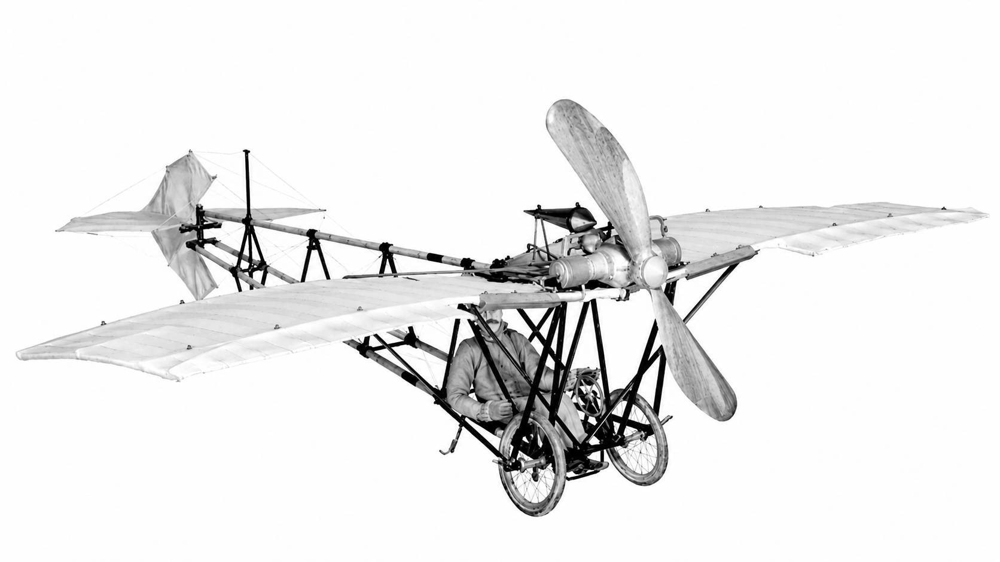
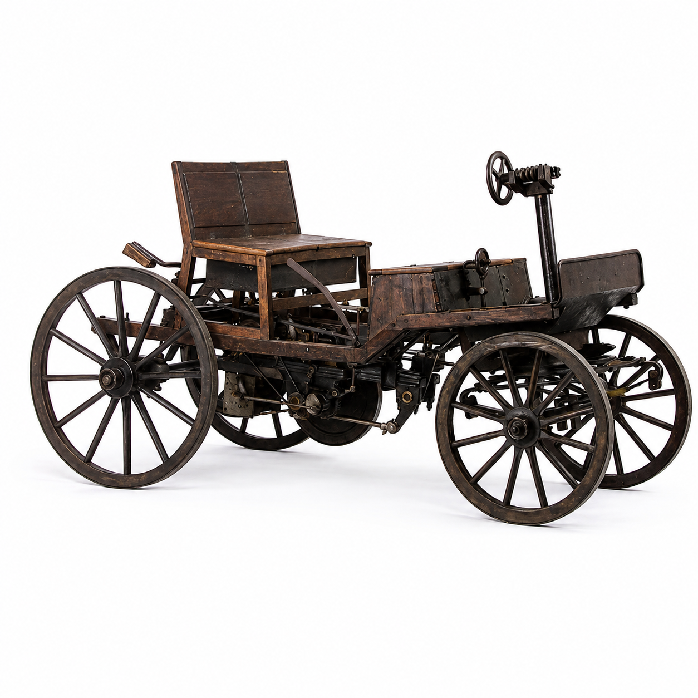

Meu primeiro post
por: Zé Naeser
Boas-vindas ao meu novo blog! aqui vou compartilhar dicas de programação e curiosidade da àrea de tecnologia.
Vou compartilhar conhecimentos sobre tecnologia e programação
por: Zé Naeser
Boas-vindas ao meu novo blog! aqui vou compartilhar dicas de programação e curiosidade da àrea de tecnologia.

por: Alberto Santos Dumont
17 de dezembro de 1903: Os irmãos Wright (Estados Unidos) realizaram o primeiro voo motorizado com um aparelho mais pesado que o ar. No entanto, a decolagem dependeu de uma catapulta e trilhos.
Fonte: https://www.terra.com.br/noticias/ciencia/primeiro-voo-motorizado-com-aparelho-mais-pesado-que-o-ar-completa-100-anos,0e3f5c1b8d6a0410VgnCLD200000bbcceb0aRCRD.html

por: Benz Patent-Motorwagen
O primeiro automóvel moderno foi o Benz Patent-Motorwagen, criado por Karl Benz em 1885 e patenteado em 1886, na Alemanha. Ele tinha um motor a gasolina, três rodas e atingia cerca de 16 km/h, sendo considerado o primeiro carro da história como conhecemos hoje.
Fonte: https://www.terra.com.br/noticias/ciencia/primeiro-carro-da-historia-completa-135-anos,0e3f5c1b8d6a0410VgnCLD200000bbcceb0aRCRD.html
por: Ralph Baer
Magnavox Odyssey. Ele foi lançado oficialmente nos Estados Unidos em setembro de 1972. Criado pelo engenheiro Ralph Baer, o aparelho se conectava à televisão comum e exigia o uso de películas plásticas na tela para simular os cenários dos jogos.
Fonte: https://www.terra.com.br/noticias/ciencia/primeiro-carro-da-historia-completa-135-anos,0e3f5c1b8d6a0410VgnCLD200000bbcceb0aRCRD.html